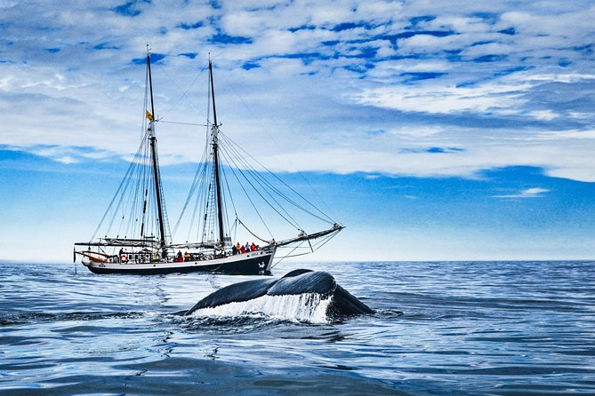

{kind=link}
Northern Lights, Iceland
Nature's most spectacular light show
Why The Northern Lights Are Special To Me
The Northern Lights (Aurora Borealis) represent one of nature's most magical and elusive phenomena. The idea of standing beneath a dark Arctic sky, watching curtains of green, purple, and blue light dance across the heavens, has captivated my imagination since I first learned about this natural wonder as a child.
How to Get There
Airports:
- Keflavík International Airport (KEF): The main international gateway to Reykjavik, about 45 minutes from the city center.
Public Transportation:
- Bus: Reykjavik has an extensive bus network, though rental cars are recommended for exploring beyond the city.
- Taxis & Ride-Sharing: Taxis are available, and ride-sharing apps like Lyft operate in the city.
Other places to visit in Iceland

{kind=link}
Húsavík
The whale-watching capital of Iceland.

Blue Lagoon
The famous geothermal spa with milky-blue waters set against black lava fields.

Jökulsárlón Glacier Lagoon
A large glacial lake filled with icebergs, creating a surreal landscape especially under the Northern Lights.

Seljalandsfoss Waterfall
One of Iceland's most famous waterfalls, where you can walk behind the cascading water.